[danger] 本系统提供的数据库脚本 是基于 mysql 5.6 的，如果您的系统高于这个版本或者低于这个版本，请您自己解决脚本的兼容问题。
[info] 推荐您选择
| 软件 | 版本 |
|---|---|
| php | 7.2.x |
| nginx | 1.15.6 |
| mysql | 5.6 |
1、把源码上传，放到 /www/wwwroot 下
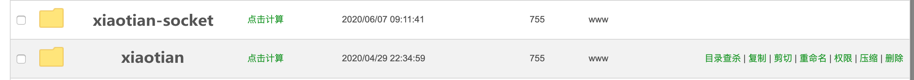
建议您 通过命令
chown -R www:www ./xiaotian
设置文件的 所属以及分组为 www，以避免权限问题。
2、添加网站
点击 首页 --> 网站 --> 添加 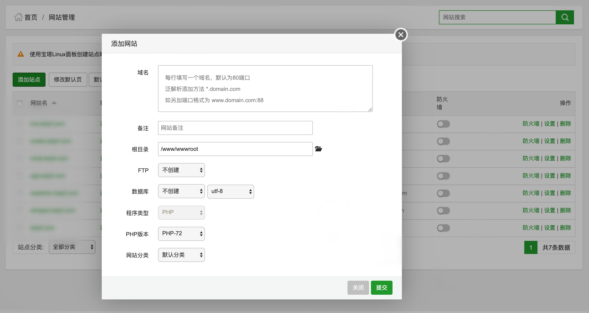
注意填写您的域名 和 根目录
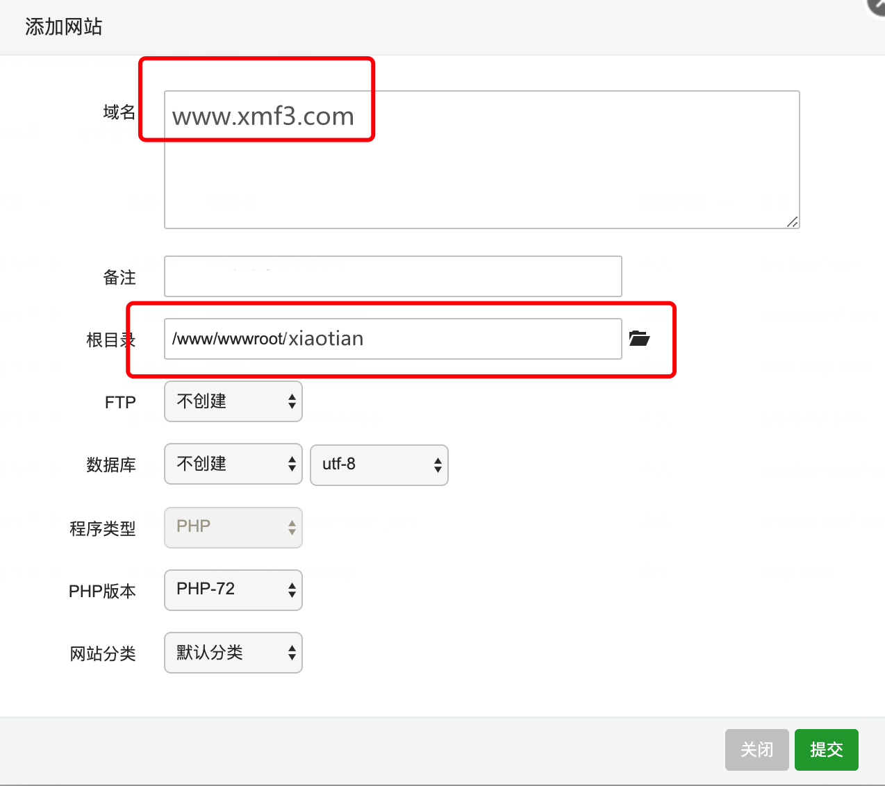 点击提交。
3、找到刚才配置的站点，点击 设置
点击 首页 --> 网站 --> 管理 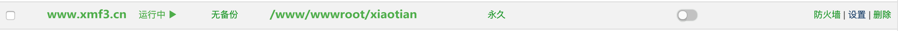
4、点击 网站目录
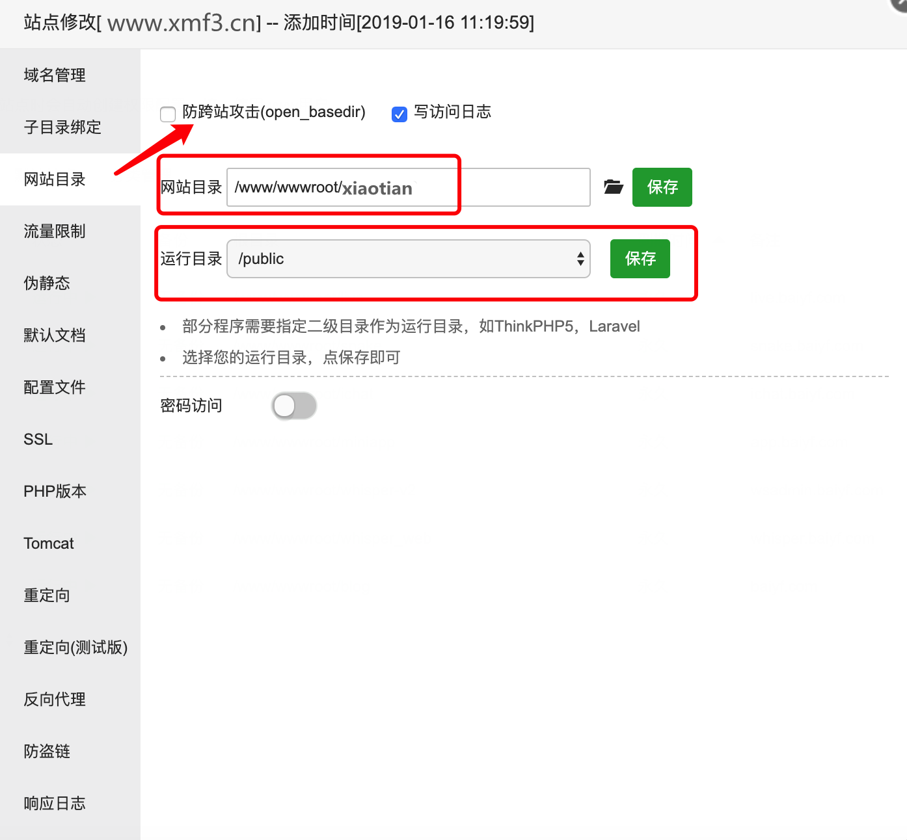 去除 跨站攻击的 √，以及设置 运行目录为 public 点击保存
5、点击 伪静态，输入如下的内容
location / {
if (!-e $request_filename) {
rewrite ^(.*)$ /index.php?s=/$1 last;
break;
}
}
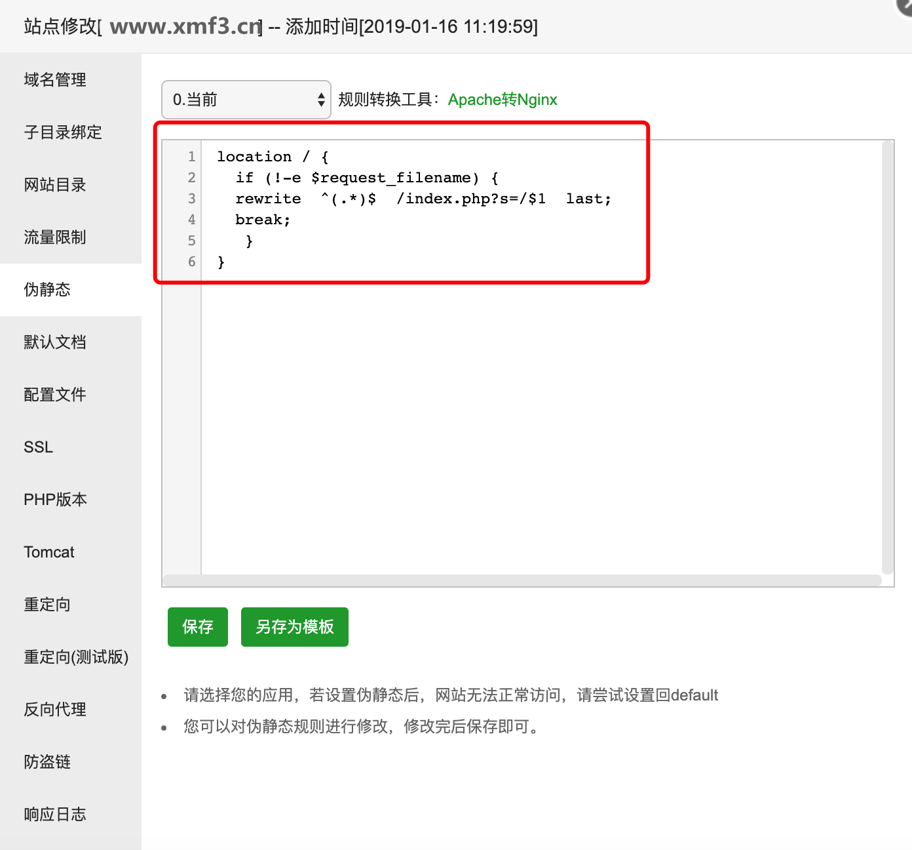 点击保存
6、 新建数据库
点击数据库 --> 添加数据库 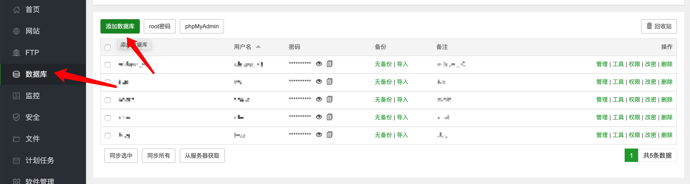 填写数据库名：xiaotian 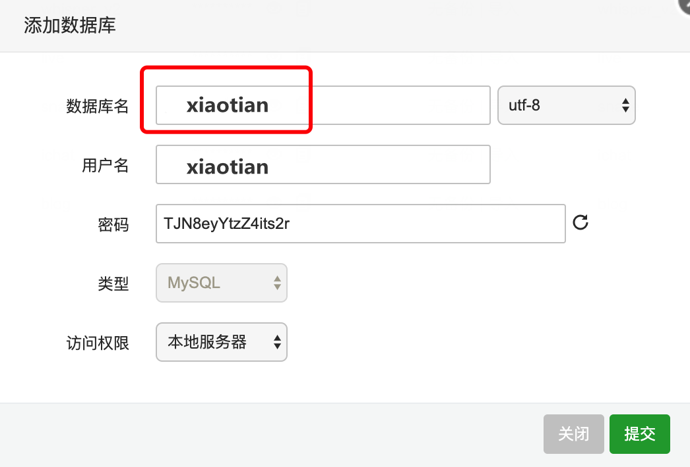 并提交 。
7、管理数据库，并导入脚本
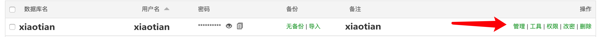 点击刚才建立的数据管理，进入 phpmyadmin 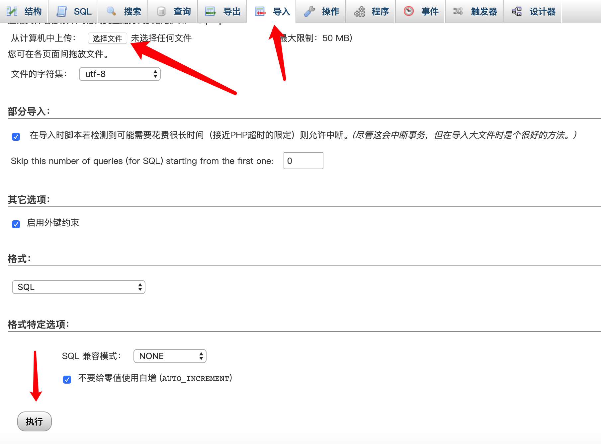 点击导入 --> 选择文件 --> 选择源码文件下的 xiaotian.sql --> 点击执行
8、配置数据库连接、用户名、密码
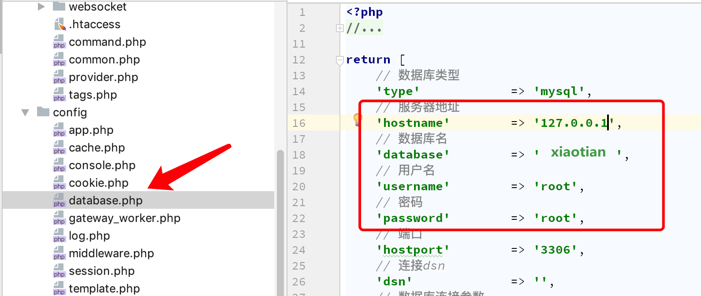 到源码下 config/database.php 填写 宝塔下的提示的 用户名、密码。并保存。
9、填写 socket 连接地址和端口，并设置您的 domain
进入 源码 config/xiaotian_socketio.php
// socket.io 端口
'socket_port' => 2020,
// http api 端口
'http_port' => 2945,
// api接口
'api_url' => 'http://www.wsv2.com/index/test/receive',
// 当前系统域名
'domain' => 'http://www.wsv2.com'
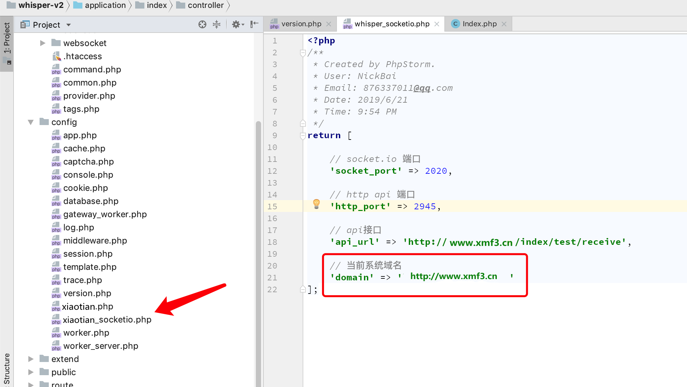
| 参数 | 解释 |
|---|---|
| socket_port | socket.io应用的端口，记住讲此端口加入防火墙白名单 |
| http_port | http服务端口，api接口用的 |
| domain | 设置成您部署客服系统的域名，一定要加上 http:// |
| api_url | 如果您使用api模式的话，请在次数配置您的api接受地址 |
10、访问您配置的网站，可见如下的页面
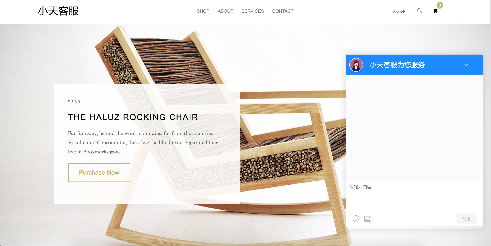
[danger] 进入之后，一般会提示 接入错误，这是因为，demo页面引入的客服连接，mysql 数据库中的默认 接入域名是我本地的测试域名 www.wsv2.com。你只需要将 seller 表中的上 access_url 改成 你的网站域名，再刷新就可以了